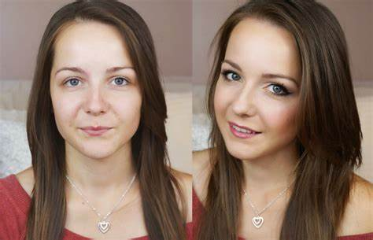
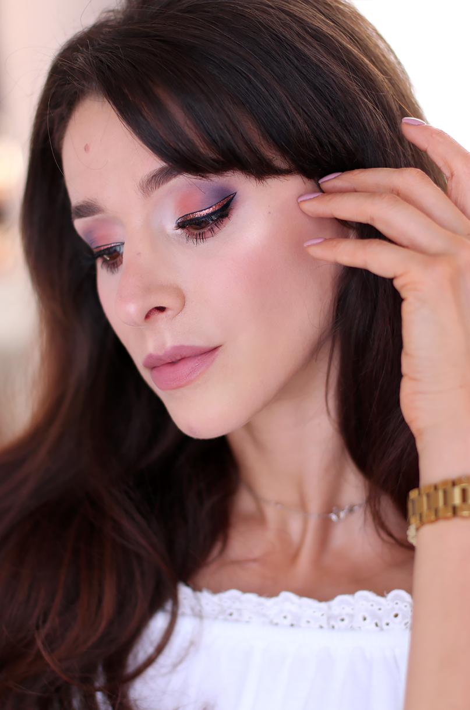

Makijaż dzienny
Makijaż dzienny to naturalny i lekki wygląd, idealny na co dzień. Jego celem jest podkreślenie naturalnego piękna, zapewniając świeży i promienny wygląd, który jest odpowiedni do pracy, szkoły czy spotkań towarzyskich.
Techniki makijażu dziennego
- Używanie lekkiego podkładu lub kremu BB, który wyrównuje koloryt skóry, nie obciążając jej
- Delikatne podkreślenie oczu i brwi za pomocą cieni i żelu do brwi
- Naturalne kolory cieni do powiek, takie jak beże, brązy i jasne róże
- Subtelny róż i rozświetlacz, które dodają twarzy świeżości i blasku
- Neutralne pomadki lub błyszczyki, które podkreślają usta bez przesadnego efektu
Galeria makijażu dziennego

